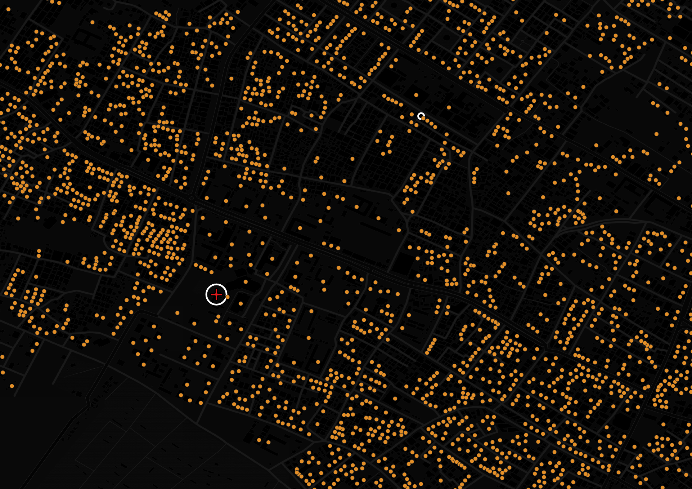

In over a year since Israel's retaliatory invasion on Gaza began, more than 42,000 Palestinians have lost their lives, over 1.7 million displaced, and a severe healthcare and humanitarian crisis has permanently changed the lives of civilians in the Gaza Strip
Published: October 30, 2024
THE HINDU VISUAL STORY TEAM
It has been over a year since the all-out war between Israel and Hamas began, which was triggered due to a Hamas-led cross-border terror attack on October 7, 2023, in Israel that killed over 1200, mostly civilians. At least 250 people were also taken hostage (not all of them Israelis).
What ensued was an immediate retaliatory war on Gaza by Israel. Now, a year on, with the Israeli invasion of Gaza showing no signs to cease, a humanitarian crisis worsens in Gaza by the day. The death toll of Palestinians in Gaza has risen above 42,000, as of October 9, 2024, according to the UN Office for the coordination of Humanitarian Affairs (UNOCHA), with the majority of them being civilians including at least 11,355 children.
Additionally, Gaza's Ministry of Health has also reported that over 97,000 people have suffered injuries since October 7 last year. More than 22,500 of those injured have suffered with life-changing injuries, requiring continued rehabilitation services for years to come. These include severe limb injuries, amputations, spinal cord trauma, traumatic brain injuries and major burns.
This map showcases the areas where airstrikes targeting civilians were concentrated since October 7, 2023, up until September 27, 2024. The circles marked in white are the major urban areas in the Gaza Strip.
Attack on major hospitals
As of October 2, 2024, the UNOCHA has reported that 19 of the 36 hospitals in Gaza are out of service. Out of the 17 partially functional, 3 are in North Gaza, 7 are in Gaza, 3 are in Deir al Balah, and 4 are in Khan Younis. Major hospitals, like Al Shifa in Gaza, have come under attack too, as shown in the map of the two northern governorates below, which shows the locations of hospitals, sized by their capacities
Take a closer look at the area in and around the Al Shifa hospital campus, it is evident that almost all buildings are either moderately or severely damaged, or completely destroyed.
MODERATESEVEREDESTROYED
Al Shifa hospital was also heavily damaged under the Israeli raids.
A destroyed section of al-Shifa hospital in Gaza City on September 17, 2024 (Omar AL-QATTAA / AFP)
The interior of a destroyed section of al-Shifa hospital in Gaza City is pictured on September 17, 2024 (Omar AL-QATTAA / AFP)
However, on September 1, 2024, Al Shifa in Gaza City did reopen its reception and emergency wards after rehabilitating and repurposing outpatient facilities.
Gaza's largest health facility is partially functional.
Damage to Nasser Hospital
Gaza Strip's second largest health facility, Nasser Hospital, which is in the Khan Younis Governorate, was also subjected to Israeli raids, which left its mark on the hospital, as evident below.
Taking a closer look at the area in and around Nasser Hospital reveals heavy damage to the infrastructure by the Israeli forces.
MODERATESEVEREDESTROYED

Damage to buildings shown above is cumulative, as of 9 September, 2024.
Palestinian paramedics inspect damage in the patient rooms caused by the Israeli strikes on the maternity ward at Nasser Hospital in the town of Khan Younis, southern Gaza Strip, Sunday, Dec. 17, 2023. (AP Photo/Mohammed Dahman)
Destruction at Nasser Hospital following Israeli forces' siege of the facility earlier this year. Palestine 2024 (Photo: MSF)
Displacement: UN estimates state that between October and December 2023, 1.7 million people were displaced within the Gaza Strip, with some having to flee multiple times. Gaza Strip has a total of 2.2 million inhabitants.
Attacks in the Al Mawasi Humanitarian Zone
In December 2023, Israel declared Al Mawasi as a safe zone. By May 2024, this zone was expanded into what is shown in blue below, encompassing zones in the Khan Younis and Deir al Balah governorates. This zone shrunk to what is shown in yellow by the end of August, 2024.
Despite declaring it as a safe zone, Israel has conducted air/drone strikes within the said safe zone too, as shown in the density plot below. The air/drone strikes plotted have been those that have been conducted between May 1 and September 27, 2024
Satellite images indicate that areas within the humanitarian zone are now densely populated, mainly with temporary settlements of the displaced.
Use the slider below to see how the area marked above looks like. The images are from before October 7, 2023 and from August 2024, respectively
Displaced Palestinians shelter in tent camps in Al-Mawasi area in Khan Younis in southern Gaza Strip, October 27, 2024. (Photo: Reuters/Ramadan Abed)
Horrors continue: An attack on a hospital compound burns dozens
On October 14, 2024, an Israeli airstrike on the courtyard of the Al Aqsa Martyrs hospital in the Deir al-Balah Governorate killed at least four people. Not only that, it also ignited a fire that swept through the courtyard packed with tent camps for people displaced by the war. Over two dozen people were left with severe burns.
The Israeli military said it targeted militants hiding out among civilians, without providing evidence. In recent months it has repeatedly struck crowded shelters and tent camps, alleging that Hamas fighters were using them as staging grounds for attacks.
The Al-Aqsa Martyrs Hospital in the central city of Deir al-Balah was already struggling to treat a large number of wounded people from an earlier strike on a school-turned-shelter nearby that killed at least 20 people when the early morning airstrike hit and fire engulfed many of the tents.
Hospital records showed that four people were killed and 40 wounded. Twenty-five people were transferred to the Nasser Hospital in southern Gaza after suffering severe burns, according to the Al-Aqsa Martyrs Hospital.
Source: Armed Conflicts Location and Events Data (ACLED), UNOCHA, UNOSAT: Comprehensive Building Damage Assessment (September 2024)